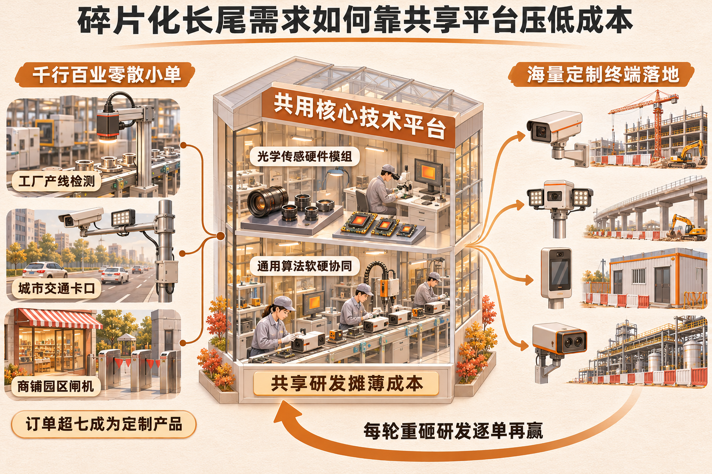

这门生意怎么运作
卖的不是标准爆品，而是靠共享技术平台吃下全国极度碎片化的定制项目
翻财务账本和反算价格之前，先把这门生意的脾气摸清。把海康威视当成卖标准硬件的代工厂，或者当成一次开发就躺着收订阅费的软件巨头，都会把账看歪。
海康面对的是极度分散的碎片化需求。2025 年前五名客户合计只占总收入的 2.00%，没有哪一家大客户能卡住脖子，但单笔业务高度分散，意味着公司需要靠大量零散项目持续拿单（客户锁定效应与复购率缺公开数）。
公司管理层在投资者交流中这样描述自身的订单形态：「海康有 3 万个左右 SKU，主要通过丰富的产品线满足碎片化的需求，比如文搜就是一款热销的 AI 大模型产品，而观澜编码更接近一种技术而非单一产品。」「目前公司日均订单超过1.4 万个，每个订单平均30 个产品，订单中定制化产品的比例超过70%……」
这两句属公司自述，勾勒出这门生意最真实的痛点：订单碎、单量小、订单中定制化产品比例超过七成。小厂接这种单子，研发与交付成本根本扛不住。

海康的解法是把底层能力做成可复用的平台。管理层在 2026 年 6 月的交流中说：「海康面对的一直是一个碎片化的市场，产品都是小品类。……就是要提炼出公司组织里共用/共享的核心技术；有了这些核心技术之后，要再把它们合理地组合在多个产品平台上，并且生长更多个产品系列，……否则成本就无法摊薄。」更早的调研中也提到：「……在项目上真正比拼的是对细分行业业务的理解，软硬协同的能力。……」
这意味着海康吃的是工程组织和规模摊薄的红利，代价则是高强度的持续投入。2025 年公司研发投入达到 118 亿元、占营业收入的 12.7%，这笔钱行情差时砍不下去，行情好时还得接着投。研究者据此将海康归类为“对一次赢一次”的科技制造——每个项目与每一代产品都要重新赢过对手；不过，存量设备锁定效应与客户复购率目前缺乏公开数据，这一归类属研究者基于客户分散与项目制特征的判断，并非实证。
谁在场内分钱
毛利率差全在境内，一出国门和对手几乎站回同一条起跑线
场内最容易产生的直觉，是看到海康长期高出同行一大截的毛利率，便认为它在全球范围都靠独家技术碾压对手。过去十年，海康毛利率每年都高于第二名大华股份，差距在 2.70 到 7.69 个百分点之间，2026 年前三季进一步拉大到 7.68 个百分点。
把 2025 年年报按境内外劈开，画面立刻露出底色。按全年总收入看，海康体量做到 925.08 亿元（大华 327.44 亿元、宇视子公司 59.84 亿元）；落到境内市场，海康境内毛利率达 45.5%。这一水平高出大华 35.0% 足足 10.56 个百分点，也明显高于宇视的代理毛利率 34.7%（千方科技“智能物联”分行业口径，随重分类变动，仅看方向）。一出国门，海康境外毛利率 46.5%，与大华之差为 −0.08 个百分点，两家几乎打平。
市场份额上，管理层曾转述：「从市场份额看，根据权威机构统计，海康威视在安防市场的海外市占率约为20%，而国内市占率则达到40%。……」这句话未写明统计机构与年份，只作公司转述参考，不当第三方事实。同样须守住证据边界的是毛利率差成因：现有数据只够定位到“差在境内”，大华同样在讲共享技术摊薄成本。境内高出的 10.56 个百分点里，渠道组织网、产品与客户结构各自占多少，因缺同类售价与渠道明细，仍是待检验的解释。两家公司的费用率与净资产回报深拆，见财报之根·账上现金与净资产回报。
另一个常被拿来论证护城河加固的视角，是大模型与物理世界的人工智能。管理层在 2026 年的交流中给出两句关键表态：「对于语言大模型，我们会使用开源算法，未来大模型部署的成本会继续下降，有利于更广泛的商业应用。」「关于大模型产品的相关数据，因其在统计口径和定义上仍需进一步明确与标准化，现暂不对其进行公开量化。」读法很清楚：语言模型层用的是开源外生能力，感知与硬件结合层只有公司自述，且收入与毛利尚未公开量化，目前看不到足以改写盈利底座的硬证据。研究者个人另持一条未查证的看法：从硬件智能、机器人与一线工业场景数据采集看，海康在“物理 AI 与具身智能底座”上具备独到生态位，但该看法缺乏公司量化披露与第三方实证，只作叙事观察变量，不调高终局利润，也不改看空立场。
| 公司 | 收入 2025（亿元） | 毛利率 2025（%） | 境内毛利率（%） | 境外毛利率（%） | 研发投入占收入（%） |
|---|---|---|---|---|---|
| 海康威视 | 925.08 | 45.9 | 45.5 | 46.5 | 12.7 |
| 大华股份 | 327.44 | 40.6 | 35.0 | 46.5 | 13.2 |
| 宇视（千方科技智能物联代理） | 59.84 | 34.7 | — | — | — |
2025 年；毛利率与研发投入率为年报口径，宇视不单独披露毛利率，毛利率用千方科技分行业智能物联代理，收入为其子公司营业收入。
2025 年整体与分地区毛利率对照：海康对大华的毛利率优势集中在境内（高出 10.56 个百分点），境外几乎打平（差 −0.08 个百分点）；宇视毛利率为千方科技智能物联分行业代理口径，仅作方向对照。
海康的生意模式
国内传统盘收缩、境外与创新接棒，但接棒的创新业务大多非全资持股
把海康 2021 至 2025 年的收入拆成五块主业，就能看清这四年并非全面停滞，而是剧烈的内部换挡。整体收入四年复合增速只有 3.2%，内部却明显劈叉：国内公共服务事业群年均萎缩 −9.4%，中小企业事业群萎缩 −10.1%，企事业事业群微增 0.6%。真正顶住盘子的，是年均增长 9.5% 的境外主业（不含创新业务的境外部分）与年均增长 20.0% 的创新业务。
到 2026 年上半年，新引擎的分量已经超过传统盘。创新业务占营业收入比重从 2021 年的 15.1% 升至 32.4%，同期同比增长 28.9%。加上占比 27.6% 的境外主业，两块新引擎已占总收入六成，带动 2026 年上半年总收入同比增长 12.0%。
不过，新引擎跑得越快，母公司股东能拿到的成色就越要细算一笔账。萤石网络（海康持股 48%）与海康机器人（海康持股 60%）等主力创新子公司都不是全资控股。合并报表规则下，归属母公司股东的利润只能按持股比例切分，少数股东占合并净利润的比重已从 2021 年的 4.1% 升至 2025 年的 8.0%。管理层在 2026 年半年度说明会上曾估算：「上半年少数股东损益 12.27 亿元主要来自创新业务，从持股比例算，大致乘以 1.5倍就是创新业务贡献的归母净利润，是去年同期数字的两倍左右。」这句属管理层估算，并非经审计的分部净利润披露。
对于非全资分利，本报告将制度约束与治理视角并列呈现。在会计与制度约束上，归母利润只拿持股份额，少数股东切走的部分老股东确实拿不到（净利率演变见叙事之果·高利润难外推，海康机器人分拆算术见海康机器人分拆）。同时，研究者另持一条未查证看法：核心团队跟投创新子公司，实质接近把部分股权激励做成共建平台，有助于在大盘承压时孵化新曲线。但员工跟投条款与同行激励费用对照均未核实，且该视角不改归母切分算术，研究者复核后仍维持 8% 回报门槛不变。
口径备忘：分业务毛利率与净利润的公开披露盲区
年报未拆三事业群与境外主业毛利率。海康年报按产品与地区披露毛利率，并未单独披露公共服务、企事业、中小企业三大事业群及境外主业各自的毛利率，也未披露各块业务独立的净利润；因此“创新业务变大会压低归母净利率”不能当作必然结论，实际走势取决于各块扣少数股东后的真实净利率与收入组合。
| 业务 | 收入 2021（亿元） | 收入 2025（亿元） | 2021–2025 复合增速（%） | 2026H1 占营业收入（%） | 2026H1 同比（%） |
|---|---|---|---|---|---|
| PBG | 191.61 | 129.12 | −9.4 | 12.5 | 4.7 |
| EBG | 166.29 | 170.63 | 0.6 | 16.5 | 3.6 |
| SMBG | 134.90 | 88.17 | −10.1 | 9.9 | 13.5 |
| 其他主业 | 9.43 | 10.53 | 2.8 | 1.1 | −27.1 |
| 境外主业 | 189.26 | 272.17 | 9.5 | 27.6 | 5.8 |
| 创新业务 | 122.71 | 254.46 | 20.0 | 32.4 | 28.9 |
| 合计 | 814.20 | 925.08 | 3.2 | 100.0 | 12.0 |
按年报分产品与分地区重排的五块业务加其他主业；2026H1 同比为 2026 上半年对 2025 上半年。
2021 至 2025 年国内三大事业群里公共服务与中小企业明显收缩、企事业基本持平，增长由境外主业与创新业务接力；2026 年上半年创新业务占比已升至 32.4%，成为最大增量来源。
政策与海外的外部敞口
生意外围的十一项外生开关，不猜概率，但须看清谁能动摇盈利底座
把这门生意本身看透之后，还得看清生意之外哪些外部开关能改写利润表。研究一共盘出 11 项或有利空，全部按公开披露量级摆在下方表里，不主观拍概率，也不写“风险可控”。其中最值得放在台面上的有三处：
- 软件产品增值税即征即退，是利润表里最重的一枚政策砝码。2025 年该项退税金额达 19.37 亿元，占当年扣非归母净利润的 14.14%。财政部、税务总局 2026 年第十号公告写明：「自2026年1月1日起，下列文件中现行有效的增值税优惠政策继续实施。」政策眼下仍在延续，但原文未写截止日期，若未来退坡或调整，起点利润与终局判断须一并下调。
- 美国直接业务已退场，但组件新规与欧洲合规仍是海外增长的暗礁。管理层先后表态：「目前，美国业务占我们海外收入的3%不到，比重非常小，占整个公司的营收就只有1%不到。」「公司已正式退出美国市场，不再有正式的销售活动」「在需求端可将海外市场分为发展中国家、发达国家、美加印等波动市场，发展中国家占海外收入 70%，发达国家占 20%，发展中国家的收入增速高于发达国家；而美加印等波动市场挑战相对更大。」直接美国敞口已清出，但美国联邦通信委员会 2026 年新规把限制扩到了含海康部件的第三方整机，这部分间接敞口未披露；欧洲限制文件目前也未取到，发达市场占比虽只有两成，却是高毛利海外盘的敏感点。
- 控股股东财务公司存款与关联采购，属于公司治理侧的常盯项。2025 年末海康存放在控股股东旗下财务公司的存款为 62.96 亿元，2026 年上半年末降为 44.40 亿元；2025 年向关联人采购与接受劳务实际发生 34.49 亿元。公司披露的存款风险评估报告属公司自评，资金安全性与关联采购实际执行额须在后续年报持续核验（财务公司存款对超额现金与估值倍数的量化影响见财报之根与估值之茎）。
| 敞口 | 量级 | 依据 | 概率 |
|---|---|---|---|
| 软件产品增值税即征即退退坡或取消 | 2025 年 19.37 亿元，占扣非归母净利润 14.14% | 财政部、税务总局 2026 年第 10 号公告（2026-01-30）：该项优惠政策继续实施，未写截止日期 | 未估 |
| 美国实体清单与 FCC | 管理层称美国业务占海外收入不到 3%、占整体收入不到 1%，并已退出美国市场；含海康部件的第三方整机间接敞口未披露 | 美国联邦通信委员会 2026 年规则（2026-10-13 生效）与美国商务部 2019 年实体清单公告 | 未估 |
| 欧洲等发达市场限制 | 境外收入 2025 年 342.86 亿元、占营业收入 37.06%（分地区口径）；管理层称发达国家约占海外收入 20% | 2025 年报分地区收入与 2026 年 1 月投资者调研；未取得欧洲限制文件 | 未估 |
| 控股股东：财务公司存款 | 2025 年末存款 62.96 亿元，当年每日最高存款限额 175.00 亿元；2026-06-30 存款 44.40 亿元 | 2025 年报关联交易附注、2026 年半年报与公司自评的风险持续评估报告 | 未估 |
| 控股股东：持股与可交换债 | 电科投资与一致行动人合计持股 41.9661%；电科投资拟以所持股票发行不超过 20 亿元可交换债 | 2026-10-10 控股股东一致行动人可交换债提示性公告 | 未估 |
| 关联采购 | 2025 年向关联人采购与接受劳务实际 34.49 亿元；2026 年预计上限 67.09 亿元 | 2026 年度日常关联交易预计公告（2026-04-18） | 未估 |
| 存货跌价 | 2026 年三季度末存货 333.34 亿元；2026 年上半年跌价准备占账面余额 4.81%，低于 2025 年末的 6.58% | 2026 年半年报存货附注 | 未估 |
| 应收坏账 | 2026 年上半年坏账准备占应收账款余额 15.0%、账龄一年以上占比 21.3% | 2026 年半年报应收账款账龄表 | 未估 |
| 汇兑 | 2026 年前三季财务费用对利润的贡献 -11.45 亿元；管理层称上半年汇兑同比影响约 12 亿元 | 2026 年半年度业绩说明会与三季报利润表 | 未估 |
| 中东与地缘冲击 | 管理层称已提前针对中东地缘政治风险增加库存备货；区域收入与在途存货未披露 | 2026-04-18 业绩说明会 | 未估 |
| 海康机器人分拆上市 | 深交所审核已第 7 次中止；归属海康的利润约占海康归母 4.4%（近似）；短期对归母利润净变化 -1.23 亿元 | 深交所审核项目页与招股书 | 未估 |
十一项或有利空按生意底稿顺序；概率一栏全部未估；量级为最近披露数，管理层说法已标明。
全表汇总 11 项涵盖外部政策、公司治理与经营资产的或有利空，发生概率全部未估；其中软件增值税即征即退（占 2025 年扣非 14.14%）已披露体量较大，直接关系盈利底座，海外合规限制则牵动境外增长空间（间接敞口未披露、欧洲文件未取得）。
研究前提与认知标记
显性标出全篇九条承重地基的性质分类，并钉好每一条的推翻开关
全篇承重前提按改变难度分为三类：制度与会计约束 来自合并报表规则、税收政策与发行定价恒等式，最硬也最难绕开；历史归纳 从过往周期与样本总结而来，换了环境可能失效；研究假设 是研究者主动押下的关键判断，也是往后最需要盯紧的脆弱点。
2025 年前五名客户只占 2.00%，管理层自述订单中定制化产品比例超过七成，生意底色归类为逐单再赢（客户锁定效应与复购率缺公开数）。
过去十年整体毛利率始终领先，但 2025 年拆开看，境内高出 10.56 个百分点而境外差 −0.08 个百分点（成因仍待检验）。
合并报表规则锁定了利润切分方式，归母净利率方向另取决于未披露的各块净利率与收入组合；研究者另持“共建平台式变相股权激励”未查证看法，不改变归母切分算术。
2025 年退税 19.37 亿元，财政部、税务总局 2026 年第十号公告写明继续实施但未写截止日期，属外生税收底座。
子公司发新股会直接摊薄母公司持股比例，长期增量只能来自募投项目回报高于门槛，而非单纯分拆动作本身。
管理层承认低价存货转收入有一定帮助但未拆出金额，周期与结构目前分不开，研究者暂按常态水平定价。
过去十年资本开支大幅高于折旧且长期资产周转率下降，在建工程期末余额仍高于上年末，高备货是否常态化尚无法分辨。
由研究者在五块业务候选路径中选定；物理 AI 与具身智能底座仅作未查证的研究者看法与叙事观察变量，未计入三个数。
由研究者结合生意底色与外部敞口定下，经复核后确认维持不变；跨行业风险排序只作方向说明，并非实证。
| 常见误判 | 更贴近生意的读法 | 对应哪一节 |
|---|---|---|
| 看表面 22.7 倍市盈率以为便宜 | 过去十年每赚一元只有约 0.7329 元变成可分配现金，8% 门槛下现价已押 370.95–452.39 亿元，高过最好情况 | 估值之茎 · 尺子 |
| 把 2026 年前三季利润大涨当成“砍费用”或全面量增 | 三项费用绝对额反而多花，毛利率跳升、费用率压缩与收入规模净贡献三项小计中约 79% 来自前两项，按收入差额估算的规模净贡献仅 12.62 亿元 | 财报之根 · 多赚的钱从哪来 |
| 把存货大涨全当成“主动锁低价料” | 2026 年上半年存货增量里原材料只占 44.9%、产成品占 47.9%，管理层也承认涨价抑制出货，备料与出货放慢分不开 | 财报之根 · 存货大涨 |
| 为等子公司分拆推迟对主业的纪律判断 | 海康机器人归属海康的近似利润只占约 4.4%，属并排短期期权，改写不了母公司主业终局 | 叙事之果 · 海康机器人分拆 |
复查节点与公开盲区：下一站盯 2027 年 4 月披露的 2026 年报
集中复查节点。地基二、六、七的验真全部落在 2027 年 4 月披露的 2026 年报，完整核验标准与价格翻盘线详见叙事之果·什么会推翻。
公开盲区。存量设备客户复购率、同类产品境内外单价对照、三大事业群与境外主业分部毛利率及净利润、大模型独立收入毛利、含海康部件第三方整机间接敞口与海康机器人 2024–2025 完整年度净利润目前均无公开一手披露，欧洲合规限制文件则尚未在本研究中取得。
生意的底色、格局的分层、外围敞口与九条承重地基已全部摊开。接下来转入定量验真：先去财报之根拆解利润成色、存货、资本开支与现金家底，再去估值之茎用尺子反算现价，接着到叙事之果检验终局上限与翻盘信号，全部原始底表收于数据底表与口径。